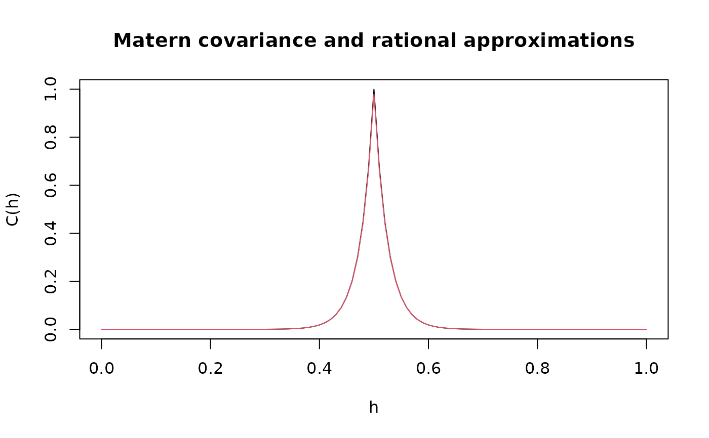

Precision matrix of stationary Gaussian Matern random fields with integer covariance exponent
Source:R/inla_rspde.R
rspde.matern.precision.integer.Rdrspde.matern.precision.integer.opt is
used for computing the precision matrix of stationary
Gaussian random fields on \(R^d\) with a Matern
covariance function
$$C(h) = \frac{\sigma^2}{2^(\nu-1)\Gamma(\nu)}
(\kappa h)^\nu K_\nu(\kappa h)$$,
where \(\alpha = \nu + d/2\) is a natural number.
Arguments
- kappa
Range parameter of the covariance function.
- nu
Shape parameter of the covariance function.
- tau
Scale parameter of the covariance function.
- sigma
Standard deviation of the covariance function. If tau is not provided, sigma should be provided.
- dim
The dimension of the domain
- fem_mesh_matrices
A list containing the FEM-related matrices. The list should contain elements c0, g1, g2, g3, etc.
Examples
set.seed(123)
nobs <- 101
x <- seq(from = 0, to = 1, length.out = nobs)
fem <- rSPDE.fem1d(x)
kappa <- 40
sigma <- 1
d <- 1
nu <- 0.5
tau <- sqrt(gamma(nu) / (kappa^(2 * nu) *
(4 * pi)^(d / 2) * gamma(nu + d / 2)))
range <- sqrt(8 * nu) / kappa
op_cov <- matern.operators(
loc_mesh = x, nu = nu, range = range, sigma = sigma,
d = 1, m = 2, parameterization = "matern"
)
v <- t(rSPDE.A1d(x, 0.5))
c.true <- matern.covariance(abs(x - 0.5), kappa, nu, sigma)
Q <- rspde.matern.precision.integer(
kappa = kappa, nu = nu, tau = tau, d = 1,
fem_mesh_matrices = op_cov$fem_mesh_matrices
)
A <- Diagonal(nobs)
c.approx_cov <- A %*% solve(Q, v)
# plot the result and compare with the true Matern covariance
plot(x, matern.covariance(abs(x - 0.5), kappa, nu, sigma),
type = "l", ylab = "C(h)",
xlab = "h", main = "Matern covariance and rational approximations"
)
lines(x, c.approx_cov, col = 2)
